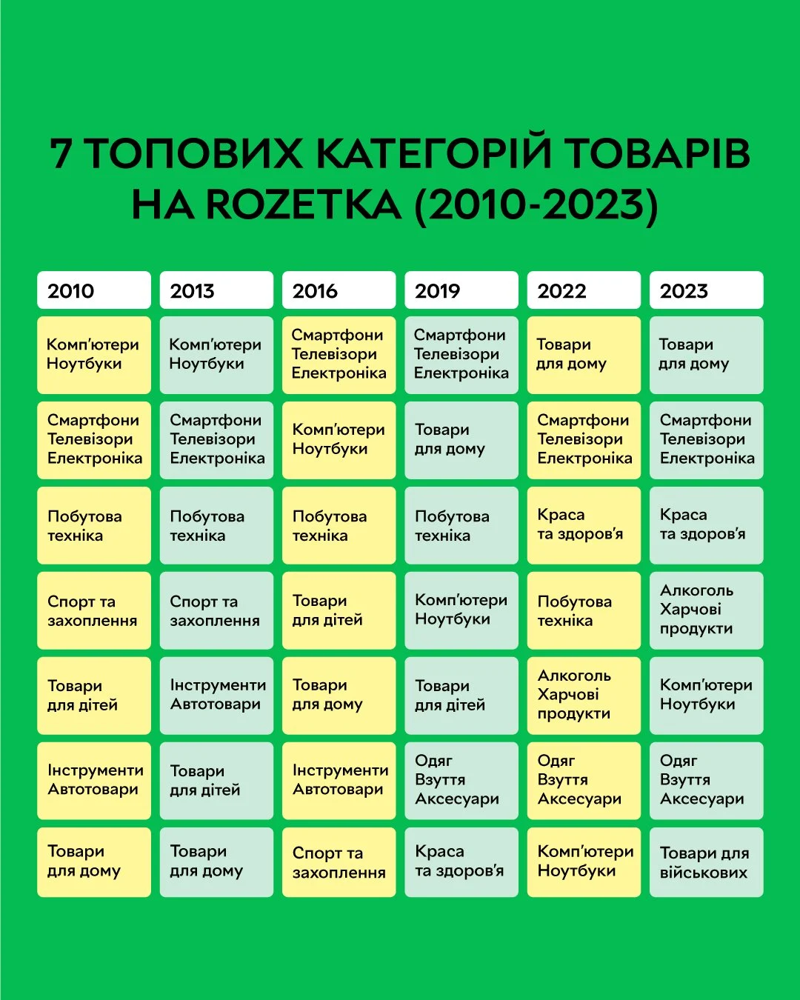

Тут ви знайдете різноманітний контент: відеоогляди, інструкції, кейси використання та вічнозелені гайди, які допоможуть вам краще зрозуміти сучасні смартфони, ноутбуки, планшети та аксесуари з нашого каталогу.
Відеоконтент
Огляньте відеопрезентацію нашого смартфона Apple iPhone 14 Pro із детальними коментарями експертів. Ви дізнаєтесь про його потужний процесор, чудову камеру з нічним режимом та стильний дизайн.
Кейси використання
Як Lenovo Yoga Slim 7 допоміг маркетологам збільшити ефективність?
Ситуація: Команда маркетингу невеликої компанії шукала надійний ноутбук для щоденної роботи з великою кількістю даних.
Рішення: Вони обрали Lenovo Yoga Slim 7 із потужним процесором та швидким SSD, отримавши чудову продуктивність і мобільність.
Результат: Завдання, які раніше займали кілька годин, тепер вирішуються набагато швидше. Команда зекономила час та підвищила свою ефективність.
Інфографіка

Подивіться на цю інфографіку, що демонструє зміну популярності товарних категорій за роки. Хоча тут наведені дані іншого великого рітейлера, вони відображають загальну тенденцію на ринку електроніки: зростання інтересу до смартфонів, аксесуарів та корисних гаджетів. Цей тренд відповідає нашим топ-продуктам: Apple AirPods Pro (2nd Gen) для високоякісного звуку, Samsung 25W USB-C Charger для швидкої зарядки ваших пристроїв та JBL Flip 6 з потужним звуком, ідеальним для подорожей або вечірок. Зверніть увагу, як упродовж років попит зміщується до мобільності, мультимедіа та зручних аксесуарів, що спрощують ваше життя.
Гайди та інструкції (Вічнозелений контент)
Як обрати ідеальний смартфон у 5 кроків
Визначте свій бюджет. Оберіть ціновий діапазон.
Оцініть характеристики. Зверніть увагу на процесор, оперативну пам’ять, камеру, батарею.
Операційна система. Оберіть між Android та iOS залежно від ваших вподобань.
Сумісність з аксесуарами. Переконайтеся, що навушники чи зарядки будуть підходити.
Відгуки та огляди. Перевірте репутацію бренду та якість пристрою.
Ці поради залишаються актуальними незалежно від року чи конкретної моделі смартфона.
Як подовжити час роботи ноутбука від батареї
Зменшити яскравість екрану до комфортного мінімуму.
Закривати непотрібні фонові програми.
Використовувати режими енергозбереження.
Оновлювати драйвери та ОС для кращої оптимізації.
Ці рекомендації залишаються корисними завжди, допомагаючи ефективно використовувати ваш ноутбук, наприклад, Apple MacBook Air M2 або Asus Zenbook 14.